현재 구현 (1안) vs 목표 (2안)
왼쪽은 앱에 들어가 있는 파라미터 SVG. 오른쪽은 레이어드 스타일 목표 느낌.
현재 1안
PhysiognomyFacePreview · 베지어 파라미터
데이터 구조 완료
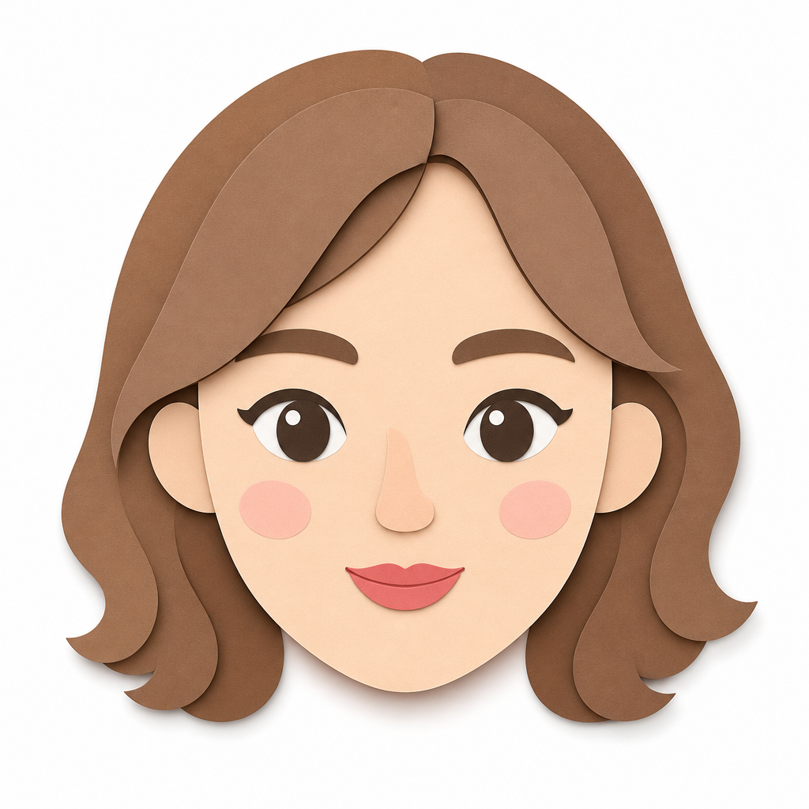
2안 목표 부위별 레이어 + 미세 그림자 추천 방향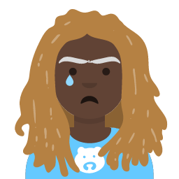
Avataaars 레이어 조합 구조 참고 구현 레퍼런스⭐ 추천: 레이어드 / 모던 벡터 (2안)
부위별 SVG·PNG를 z-index로 겹치는 방식. 관상 위저드 데이터 구조와 가장 잘 맞습니다.
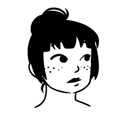
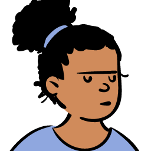
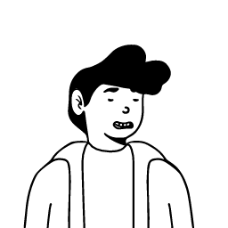
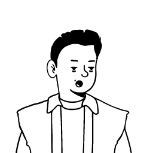
라이브 조합: getavataaars.com · notion-avatar.app · DiceBear 52종
미니멀 / 캐릭터 변형
관상 앱 톤에 맞게 단순화·여백 조절하면 좋은 스타일.
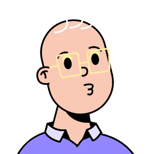
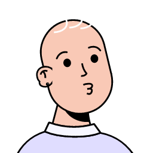
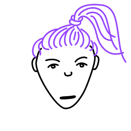
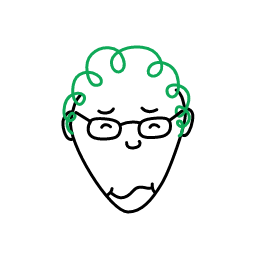
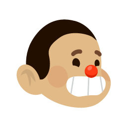
Big Smile 둥근 표정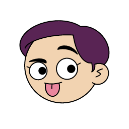
Adventurer 캐릭터풍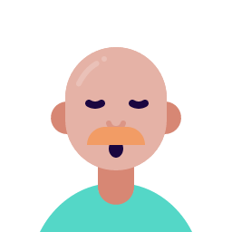
Personas 중성·심플 실루엣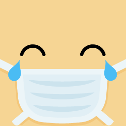
Fun Emoji 이모지형 과장 표현동양적 / 브랜드 차별화 (3안)
관상 정체성에 맞는 고난도 방향. 수묵·여백·절제된 선.
동양적 미니멀
수묵·여백·이솝식 정갈함
브랜드 차별화
레이어드 페이퍼컷
종이 겹침 + 미세 그림자
2안 목표 느낌
스타일 비교표
현재 코드 구조와의 궁합, 관상 앱 톤 적합도.
| 스타일 | 레이어 조합 | 관상 톤 | 구현 난이도 | 메모 |
|---|---|---|---|---|
| Avataaars / Lorelei | 최적 | 중 | 중 | 부위별 에셋 분리 구조가 명확. 2안 1순위. |
| Notionists / Micah | 좋음 | 좋음 | 중 | 미니멀·모던. 파스텔/무채색으로 톤 다운 가능. |
| Open Peeps / Croodles | 가능 | 중 | 쉬움 | 친근하지만 관상 무게감은 약할 수 있음. |
| 동양적 미니멀 (3안) | 커스텀 | 최적 | 높음 | 브랜드 차별화 최고. 전용 일러스트 제작 필요. |
| 현재 1안 (SVG 파라미터) | 없음 | 중 | 완료 | 데이터·위저드 완료. 시각 고도화만 남음. |
구현 메모
2안 전환 시: 이마·눈·코·입·턱별 PNG/SVG 에셋 + z-index 레이어 스택.
관상 선택값(physiognomy.json) → 부위 variant id 매핑.
오픈소스 참고
avataaars (MIT) · DiceBear (CC0/CC BY) · Lorelei
샘플 갱신
./scripts/fetch-design-samples.sh 또는 npm run design:samples